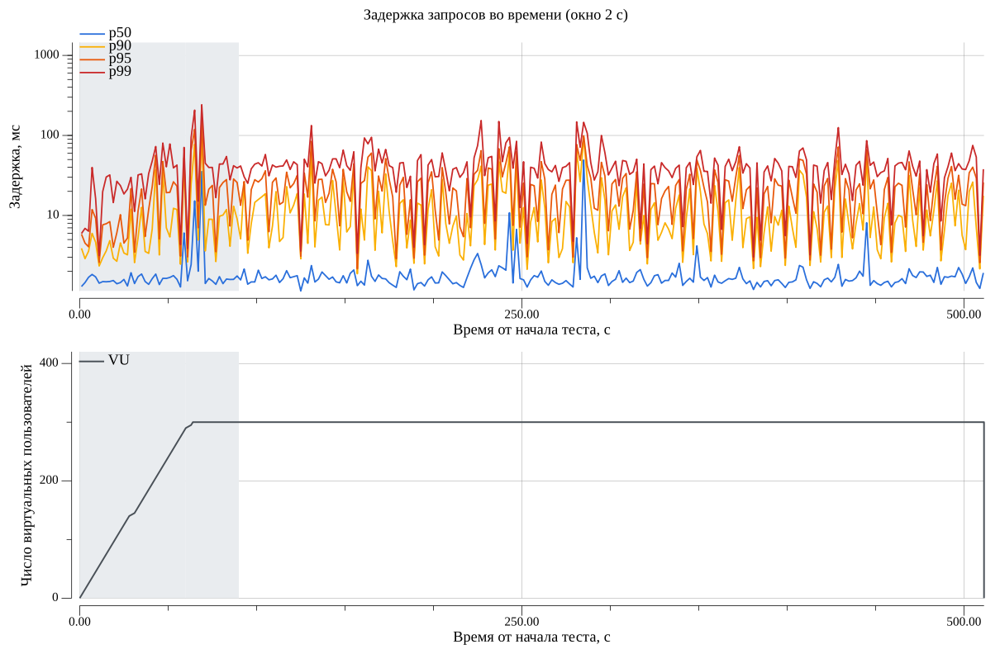
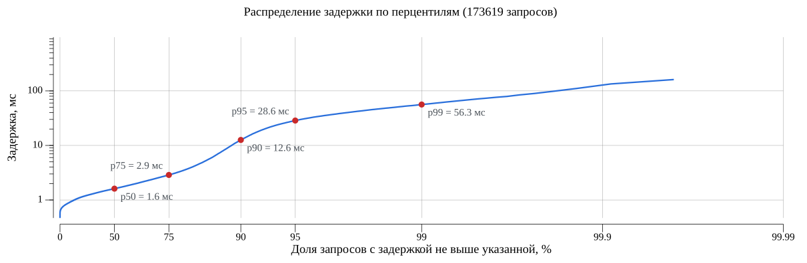
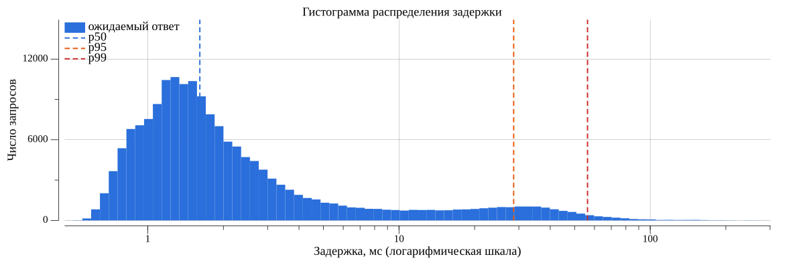
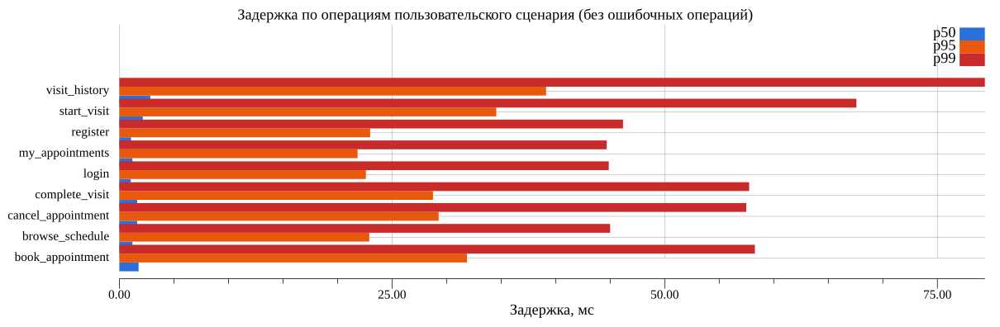
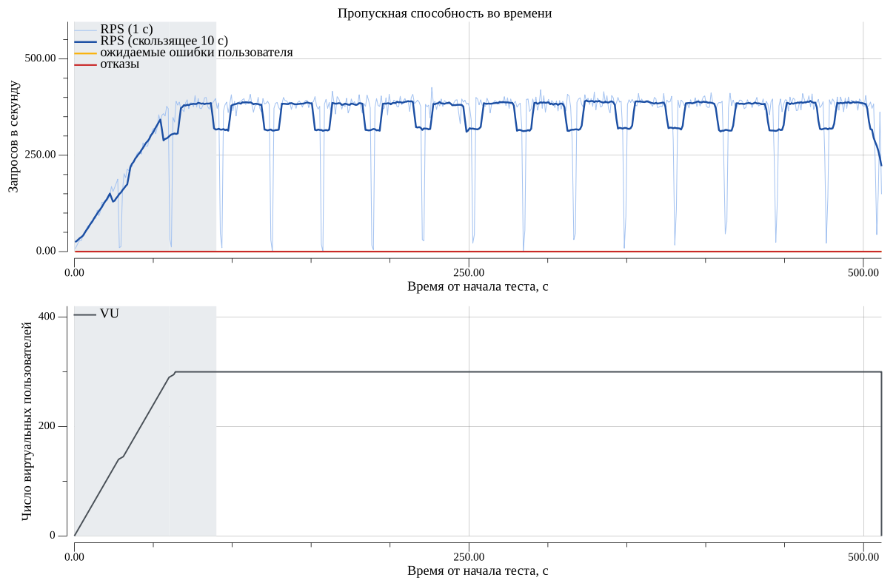
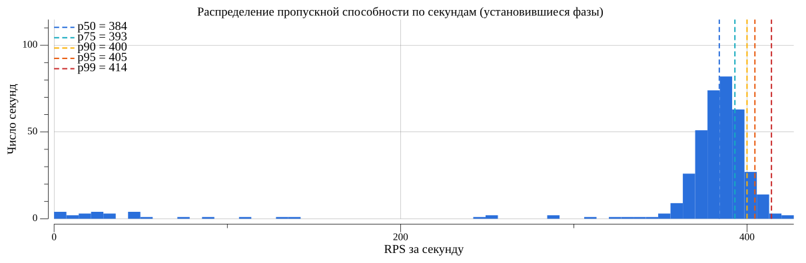
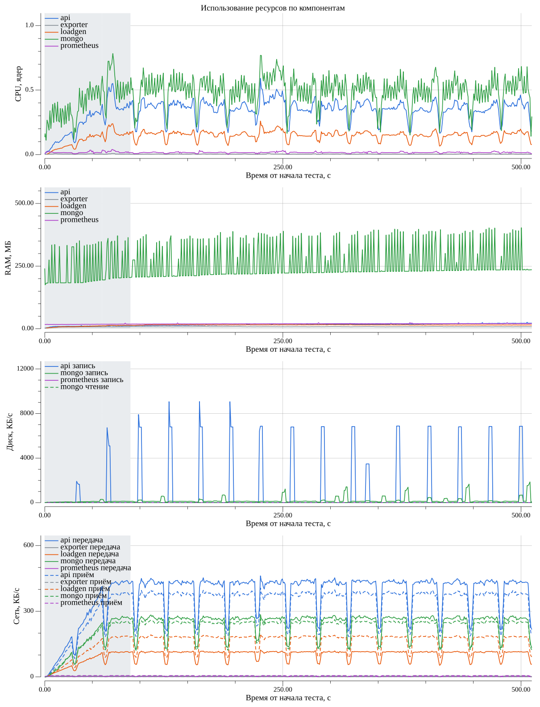

Фиксированная нагрузка
Запросов173619
RPS среднее / медиана339 / 382
p50 / p95 задержки1.61 / 28.6 мс
p99 задержки56.3 мс
Отказы0.00%
Ошибочные операции0.00%
Ошибочных операций: задано 0%, фактически 0.0%. Отказы 0.00%. Дрейф p95 между первым и последним отрезком ×0.86, RPS ×1.00. Тренд памяти: api 83.2 МБ/ч, exporter 0.39 МБ/ч, loadgen -5.28 МБ/ч, mongo 264 МБ/ч, prometheus 14.7 МБ/ч.
Задержка
| Задержка, мс | count | min | mean | p50 | p75 | p90 | p95 | p99 | max |
|---|---|---|---|---|---|---|---|---|---|
| Все запросы | 173619 | 0.47 | 5.29 | 1.61 | 2.88 | 12.6 | 28.6 | 56.3 | 298 |
| Корректные операции | 173619 | 0.47 | 5.29 | 1.61 | 2.88 | 12.6 | 28.6 | 56.3 | 298 |
| Ошибочные операции | 0 | — | — | — | — | — | — | — | — |



Операции пользовательского сценария
| Операция | count | min | mean | p50 | p75 | p90 | p95 | p99 | max | Отказы | Ошибочные |
|---|---|---|---|---|---|---|---|---|---|---|---|
| book_appointment | 25168 | 0.97 | 5.76 | 1.76 | 2.93 | 14.6 | 31.9 | 58.3 | 242 | 0.00% | 0.00% |
| browse_schedule | 25201 | 0.62 | 3.94 | 1.21 | 1.82 | 7.98 | 22.9 | 45.0 | 187 | 0.00% | 0.00% |
| cancel_appointment | 7518 | 0.86 | 5.45 | 1.64 | 2.74 | 14.6 | 29.3 | 57.5 | 257 | 0.00% | 0.00% |
| complete_visit | 17549 | 0.87 | 5.31 | 1.63 | 2.69 | 12.8 | 28.8 | 57.7 | 169 | 0.00% | 0.00% |
| login | 25250 | 0.49 | 3.77 | 1.05 | 1.60 | 7.94 | 22.6 | 44.9 | 184 | 0.00% | 0.00% |
| my_appointments | 25141 | 0.57 | 3.82 | 1.20 | 1.81 | 7.58 | 21.8 | 44.7 | 152 | 0.00% | 0.00% |
| register | 5180 | 0.47 | 3.81 | 1.07 | 1.61 | 7.79 | 23.0 | 46.2 | 119 | 0.00% | 0.00% |
| start_visit | 17578 | 1.18 | 6.85 | 2.15 | 3.72 | 18.2 | 34.6 | 67.6 | 243 | 0.00% | 0.00% |
| visit_history | 25034 | 0.89 | 8.30 | 2.84 | 5.06 | 22.1 | 39.1 | 79.4 | 298 | 0.00% | 0.00% |

Пропускная способность
| Показатель | count | min | mean | p50 | p75 | p90 | p95 | p99 | max |
|---|---|---|---|---|---|---|---|---|---|
| RPS за секунду | 512 | 0.00 | 339 | 382 | 391 | 399 | 404 | 412 | 426 |


Фазы нагрузки
| Участок | VU | RPS ср. | RPS p50 | RPS p5 | p50 мс | p95 мс | p99 мс | Отказы | CPU api | CPU mongo | RAM api, МБ | SLO |
|---|---|---|---|---|---|---|---|---|---|---|---|---|
| разгон | 300 | 185 | 182 | 14.9 | 1.59 | 24.6 | 52.8 | 0.00% | 0.18 | 0.35 | 9.33 | да |
| прогрев | 300 | 356 | 380 | 169 | 1.79 | 49.3 | 120 | 0.00% | 0.39 | 0.54 | 12.0 | да |
| стабильная нагрузка | 300 | 360 | 384 | 50.6 | 1.60 | 27.7 | 53.0 | 0.00% | 0.35 | 0.49 | 16.9 | да |
Динамика длительной нагрузки
| Участок | VU | RPS ср. | RPS p50 | RPS p5 | p50 мс | p95 мс | p99 мс | Отказы | CPU api | CPU mongo | RAM api, МБ | SLO |
|---|---|---|---|---|---|---|---|---|---|---|---|---|
| 1/5 | 300 | 355 | 384 | 28.4 | 1.63 | 30.0 | 54.1 | 0.00% | 0.36 | 0.50 | 13.2 | да |
| 2/5 | 300 | 365 | 384 | 287 | 1.68 | 30.5 | 59.1 | 0.00% | 0.37 | 0.52 | 15.2 | да |
| 3/5 | 300 | 356 | 384 | 46.5 | 1.59 | 29.4 | 58.3 | 0.00% | 0.35 | 0.49 | 17.0 | да |
| 4/5 | 300 | 369 | 386 | 262 | 1.54 | 22.5 | 44.0 | 0.00% | 0.34 | 0.48 | 18.6 | да |
| 5/5 | 300 | 356 | 383 | 125 | 1.56 | 25.7 | 49.9 | 0.00% | 0.34 | 0.48 | 20.5 | да |
| Компонент | Тренд памяти на установившемся участке, МБ/ч |
|---|---|
| api | 83.2 |
| exporter | 0.39 |
| loadgen | -5.28 |
| mongo | 264 |
| prometheus | 14.7 |
Использование ресурсов
| Компонент | Метрика | min | max | mean | median | p95 |
|---|---|---|---|---|---|---|
| api | CPU, ядер | 0.01 | 0.59 | 0.34 | 0.36 | 0.45 |
| api | Троттлинг CPU, с/с | 0.00 | 0.03 | 0.00 | 0.00 | 0.01 |
| api | Чтение с диска, КБ/с | 0.00 | 0.00 | 0.00 | 0.00 | 0.00 |
| api | Запись на диск, КБ/с | 0.00 | 9071 | 795 | 0.00 | 6831 |
| api | RAM (working set), МБ | 3.18 | 25.8 | 16.0 | 16.2 | 21.7 |
| api | Сеть, приём КБ/с | 0.17 | 406 | 330 | 376 | 390 |
| api | Сеть, передача КБ/с | 0.07 | 461 | 376 | 428 | 442 |
| api | Процессы и потоки | 7.00 | 15.0 | 8.98 | 9.00 | 9.00 |
| exporter | CPU, ядер | 0.00 | 0.01 | 0.00 | 0.00 | 0.01 |
| exporter | Троттлинг CPU, с/с | 0.00 | 0.00 | 0.00 | 0.00 | 0.00 |
| exporter | Чтение с диска, КБ/с | 0.00 | 0.00 | 0.00 | 0.00 | 0.00 |
| exporter | Запись на диск, КБ/с | 0.00 | 0.00 | 0.00 | 0.00 | 0.00 |
| exporter | RAM (working set), МБ | 2.85 | 8.14 | 7.51 | 7.64 | 8.09 |
| exporter | Сеть, приём КБ/с | 0.24 | 0.55 | 0.45 | 0.48 | 0.48 |
| exporter | Сеть, передача КБ/с | 1.69 | 4.03 | 3.74 | 4.01 | 4.02 |
| exporter | Процессы и потоки | 5.00 | 5.00 | 5.00 | 5.00 | 5.00 |
| loadgen | CPU, ядер | 0.00 | 0.26 | 0.15 | 0.15 | 0.19 |
| loadgen | Троттлинг CPU, с/с | 0.00 | 0.00 | 0.00 | 0.00 | 0.00 |
| loadgen | Чтение с диска, КБ/с | 0.00 | 0.00 | 0.00 | 0.00 | 0.00 |
| loadgen | Запись на диск, КБ/с | 0.00 | 0.00 | 0.00 | 0.00 | 0.00 |
| loadgen | RAM (working set), МБ | 3.46 | 16.4 | 14.4 | 15.2 | 16.1 |
| loadgen | Сеть, приём КБ/с | 2.87 | 196 | 160 | 182 | 188 |
| loadgen | Сеть, передача КБ/с | 2.62 | 123 | 100 | 113 | 117 |
| loadgen | Процессы и потоки | 7.00 | 9.00 | 8.80 | 9.00 | 9.00 |
| mongo | CPU, ядер | 0.11 | 0.78 | 0.48 | 0.49 | 0.65 |
| mongo | Троттлинг CPU, с/с | 0.00 | 0.59 | 0.18 | 0.17 | 0.35 |
| mongo | Чтение с диска, КБ/с | 0.00 | 60.0 | 0.51 | 0.00 | 0.00 |
| mongo | Запись на диск, КБ/с | 7.09 | 1857 | 184 | 112 | 665 |
| mongo | RAM (working set), МБ | 175 | 403 | 257 | 229 | 386 |
| mongo | Сеть, приём КБ/с | 0.09 | 265 | 217 | 247 | 256 |
| mongo | Сеть, передача КБ/с | 0.03 | 284 | 233 | 265 | 277 |
| mongo | Процессы и потоки | 39.0 | 103 | 84.9 | 87.0 | 100 |
| prometheus | CPU, ядер | 0.00 | 0.04 | 0.02 | 0.02 | 0.02 |
| prometheus | Троттлинг CPU, с/с | 0.00 | 0.00 | 0.00 | 0.00 | 0.00 |
| prometheus | Чтение с диска, КБ/с | 0.00 | 0.00 | 0.00 | 0.00 | 0.00 |
| prometheus | Запись на диск, КБ/с | 0.00 | 8.16 | 0.79 | 0.00 | 7.00 |
| prometheus | RAM (working set), МБ | 17.0 | 24.5 | 19.7 | 20.0 | 20.6 |
| prometheus | Сеть, приём КБ/с | 1.85 | 6.22 | 5.68 | 6.08 | 6.20 |
| prometheus | Сеть, передача КБ/с | 0.34 | 1.15 | 0.92 | 0.96 | 1.09 |
| prometheus | Процессы и потоки | 7.00 | 14.0 | 8.00 | 8.00 | 8.00 |

Коды ответов
| Код | Запросов |
|---|---|
| 200 | 125693 |
| 201 | 47926 |
Окружение прогона
| Компонент | Логические CPU | Квота CPU | Резерв RAM, МБ | Лимит RAM, МБ | Образ | ID образа |
|---|---|---|---|---|---|---|
| api | 0,1 | 1 | 512 | 512 | vitaline-lab6-api:20261115-213200-stable-drwr | 579b68ac81b6 |
| exporter | 6,7 | — | 64 | 64 | vitaline-lab4-exporter:1 | 1d23c3f2327d |
| loadgen | 4,5 | — | 2048 | 2048 | vitaline-lab4-loadgen:1 | 48e1046c6d0e |
| mongo | 2,3 | 1 | 1024 | 1024 | mongo:7 | 9896df581dfd |
| prometheus | 6,7 | — | 768 | 768 | prom/prometheus:v3.5.0 | 63805ebb8d2b |